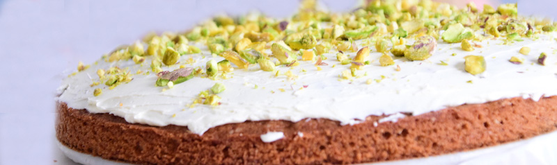

Pistache taart
Geef het recept een cijfer tussen 1 en 10
- 1 limoen
- 225 g ongezouten roomboter
- 225 g witte basterdsuiker
- 4 middelgrote eieren
- 200 g zelfrijzend bakmeel
- 25 g maizena
- 100 g poedersuiker
- 60 g gepelde pistachenoten
- 200 g mascarpone
Bereidingswijze
1. Verwarm de oven op 190 °C.
2. Hak de chocolade en smelt au bain-marie.
3. Maal de pistachenoten met ⅓ van de suiker in de keukenmachine.
4. Voeg de boter en ⅓ van de suiker toe en mix tot een glad beslag.
5. Splits de eieren en voeg 1 voor 1 de eidooiers aan het beslag toe.
6. Voeg de gesmolten chocolade toe en mix goed en kort.
7. Klop de eiwitten in een schone kom stijf met een mespunt zout en de rest van de suiker.
8. Spatel het beslag erdoor. Schep in de vorm en zet 45 min. in de oven.
9. Verlaag na 20 min. de temperatuur naar 160 °C.
10. De taart is gaar als de zijkant loskomt van de rand. Laat afkoelen. Hak de rest van de noten grof.
11. Strooi wat poedersuiker over de taart en garneer met de gehakte nootjes.